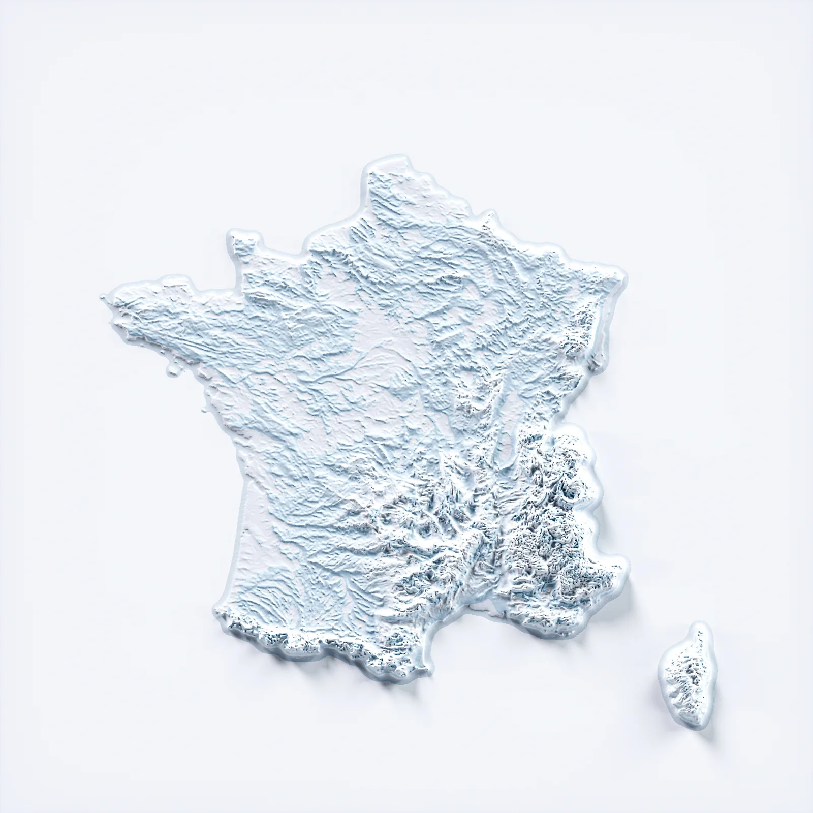

104,6 M
Littoral
Le littoral concentre 104,6 millions de nuitées durant l’été 2025, avec une forte part camping. En location saisonnière, la concurrence visuelle, le prix et la valeur perçue deviennent décisifs.
La France n’est pas un seul marché de location saisonnière. Montagne, littoral, ville, campagne, Corse ou DOM-TOM : chaque territoire possède sa saisonnalité, ses canaux, ses contraintes et ses leviers de visibilité.
Les données touristiques montrent une réalité simple : les régions françaises ne fonctionnent pas avec les mêmes volumes, les mêmes types d’hébergements ni les mêmes dynamiques. Un bien en station de montagne, un appartement urbain, une villa littorale, un gîte rural ou un hébergement ultramarin ne se pilotent pas de la même manière.
LocPilot structure donc la méthode autour de la localité : visibilité SEO/GEO, canal direct, outils, valeur perçue, lecture de rentabilité et périmètre opérationnel cadré lorsque c’est nécessaire.

Les données INSEE donnent un socle officiel de fréquentation touristique par région et par espace touristique. Les données AirDNA complètent cette lecture avec l’angle location courte durée Airbnb/Vrbo.
La visibilité locale doit être adaptée à la réalité de chaque marché : destination, clientèle, saison, canaux de réservation, contraintes locales et niveau de dépendance aux plateformes.
Sources : INSEE 2024 par région, INSEE été 2025 par secteur, INSEE tourisme 2024, AirDNA avril 2025, AirDNA territoire France.
Les chiffres ci-dessous portent sur les hébergements collectifs touristiques : hôtels, campings et autres hébergements collectifs de tourisme. Ils ne mesurent pas directement les plateformes entre particuliers.
| Région | Total nuitées 2024 | Hôtels | Campings | AHCT | Lecture dominante |
|---|---|---|---|---|---|
| Île-de-France | 82,95 M | 67,94 M | 1,81 M | 13,20 M | Marché hôtelier / urbain / international |
| Auvergne-Rhône-Alpes | 60,85 M | 24,43 M | 13,91 M | 22,50 M | Montagne, villes, stations, multi-saisons |
| Nouvelle-Aquitaine | 55,91 M | 15,97 M | 28,99 M | 10,95 M | Littoral, camping, rural, grande dispersion |
| Provence-Alpes-Côte d’Azur | 55,49 M | 24,10 M | 17,46 M | 13,93 M | Littoral premium, urbain, montagne sud |
| Occitanie | 55,22 M | 15,59 M | 28,82 M | 10,81 M | Littoral, Pyrénées, thermalisme, rural |
| Bretagne | 25,15 M | 7,60 M | 13,58 M | 3,97 M | Littoral, camping, séjours nature |
| Pays de la Loire | 24,74 M | 7,04 M | 13,64 M | 4,06 M | Littoral, camping, tourisme familial |
| Grand Est | 22,44 M | 14,17 M | 3,80 M | 4,48 M | Urbain, route, patrimoine, courts séjours |
| Normandie | 16,17 M | 7,91 M | 5,36 M | 2,89 M | Littoral, mémoire, week-end, proximité Paris |
| Hauts-de-France | 15,24 M | 9,03 M | 3,50 M | 2,71 M | Urbain, littoral, courts séjours |
| Bourgogne-Franche-Comté | 11,34 M | 6,82 M | 3,41 M | 1,11 M | Patrimoine, rural, route, courts séjours |
| Corse | 10,76 M | 3,30 M | 4,32 M | 3,14 M | Insulaire, saison forte, valeur destination |
| Centre-Val de Loire | 10,08 M | 5,93 M | 2,56 M | 1,59 M | Patrimoine, châteaux, courts séjours |
Données arrondies à partir des tableaux régionaux INSEE 2024. AHCT = autres hébergements collectifs de tourisme.
L’été 2025 confirme que les territoires touristiques ne fonctionnent pas de la même manière. La stratégie locale d’une location saisonnière doit tenir compte du secteur, pas seulement de la région.
Le littoral concentre 104,6 millions de nuitées durant l’été 2025, avec une forte part camping. En location saisonnière, la concurrence visuelle, le prix et la valeur perçue deviennent décisifs.
Les massifs de montagne hors littoral atteignent 44,6 millions de nuitées durant l’été 2025. La saisonnalité, les activités et la projection locale jouent un rôle central.
Ces territoires représentent 108,6 millions de nuitées. Les usages sont plus mixtes : courts séjours, urbain, rural, patrimoine, affaires ou évènementiel.
La bonne méthode ne consiste pas à dupliquer une page générique partout. Elle consiste à adapter le contenu, la visibilité, l’expérience, les outils et le canal direct à la demande réelle de chaque destination.
Le socle reste le même : visibilité locale, canal direct, outils, rentabilité et cadre clair. Mais les leviers changent selon le territoire.
La Mongie, Saint-Lary-Soulan, Cauterets, Barèges, Loudenvielle, Peyragudes, Piau-Engaly : ici, la saisonnalité et la valeur destination sont décisives.
La concurrence est forte. La différence se joue sur l’expérience, les photos, le direct, les avis et la lisibilité du séjour.
Les marchés insulaires demandent une lecture spécifique : accès, saison forte, valeur perçue, durée de séjour et attentes voyageur.
Les territoires ultramarins exigent une stratégie adaptée aux flux aériens, aux bassins de clientèle, aux saisons et aux contraintes locales.
En ville, la bataille se joue souvent sur la recherche locale, la proximité, les évènements, les séjours courts et la clarté du parcours.
Le rural dépend fortement de la projection : calme, nature, activités, équipements, capacité, photos et contenu territorial.
LocPilot dispose d’un ancrage terrain fort dans les Hautes-Pyrénées : La Mongie, Saint-Lary-Soulan, Bagnères-de-Bigorre, Cauterets, Barèges, Luz-Saint-Sauveur, Loudenvielle, Gavarnie-Gèdre, Val Louron, Peyragudes ou Piau-Engaly.
Mais la méthode n’est pas limitée à ce territoire. Elle peut s’adapter à la France métropolitaine, à la Corse et aux DOM-TOM, avec une logique simple : partir du marché local, puis structurer la visibilité, le canal direct et les outils autour de cette réalité.
Les volumes et clientèles changent. Mais les points de blocage sont souvent les mêmes : dépendance OTA, faible visibilité locale, absence de direct, outils fragmentés et manque de lecture économique.
Plus les plateformes concentrent les réservations, plus la marge, la visibilité et la relation client restent exposées.
Un bien doit exister sur des recherches liées à sa destination, pas seulement dans les filtres internes d’une plateforme.
Sans point d’entrée propriétaire clair, le voyageur n’a souvent aucune alternative lisible aux OTA.
Calendriers, prix, messages, annonces et disponibilités doivent être cohérents pour éviter friction et perte de contrôle.
Le taux d’occupation ne suffit pas : il faut lire les commissions, le prix moyen, la marge et la part directe.
Photos, drone, immersion 360, preuves et contenu de destination renforcent la projection et la conversion.
LocPilot accompagne les propriétaires en France sur la visibilité locale, le canal direct, la structuration digitale, la configuration d’outils, la lecture de rentabilité et certains volets opérationnels lorsque le périmètre est légalement cadré.
Comprendre la destination, la saisonnalité, les concurrents, les canaux et les recherches réellement utiles.
Créer des pages locales, contenus de destination et signaux de confiance adaptés à la zone ciblée.
Structurer un parcours direct crédible, relié à la destination, au bien, aux preuves et à la demande réelle.
La page France pose la vision territoriale. Les guides suivants permettent d’approfondir le direct, le SEO local et la structuration globale.
Comprendre les fondations d’un bien plus visible, plus rentable et mieux structuré.
Lire le guideRendre un bien visible sur les recherches liées à une destination ou une commune précise.
Lire le guideRéduire la dépendance aux plateformes et préserver davantage de marge.
Lire le guideOui. LocPilot peut accompagner des propriétaires et exploitants partout en France, Corse comprise, ainsi que dans les DOM-TOM, avec une approche adaptée à chaque territoire.
Non. Chaque territoire possède sa saisonnalité, ses canaux, sa clientèle et ses contraintes. La méthode doit être adaptée à la réalité locale.
Non. L’INSEE précise que ses enquêtes sur les hébergements collectifs touristiques ne mesurent pas la fréquentation via les plateformes de réservation entre particuliers. AirDNA complète cette lecture pour Airbnb et Vrbo.
Oui. La méthode peut être adaptée aux territoires insulaires et ultramarins, avec une lecture spécifique de la saisonnalité, des flux, de la visibilité locale et du cadre applicable.
Non. LocPilot structure les signaux, le canal direct, les outils et la lecture de performance, mais ne garantit ni position SEO, ni volume de réservations, ni validation par des plateformes tierces.
Faisons un premier point sur votre localité, votre saisonnalité, votre concurrence, votre visibilité locale, votre dépendance aux OTA et les leviers à prioriser.